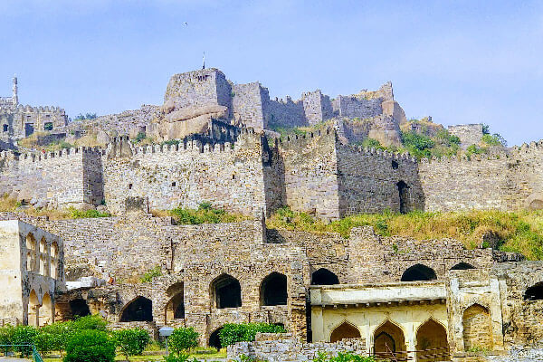
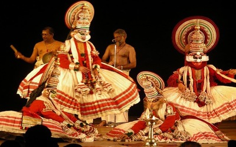
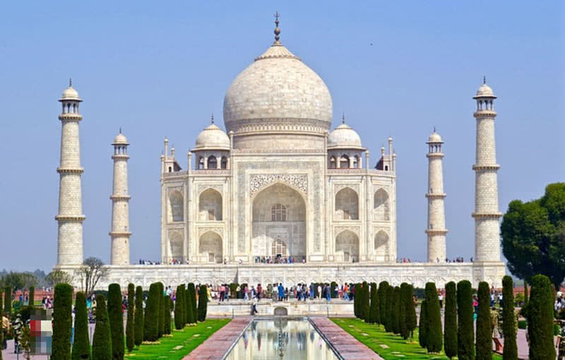
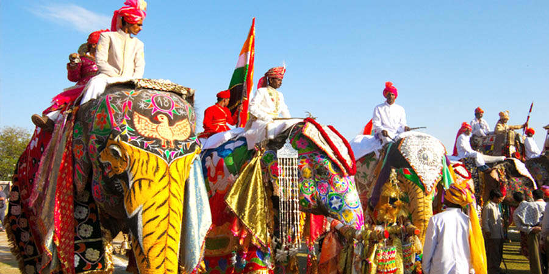
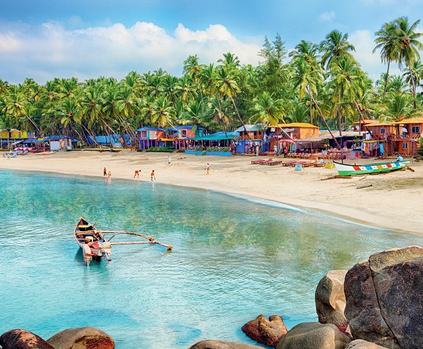
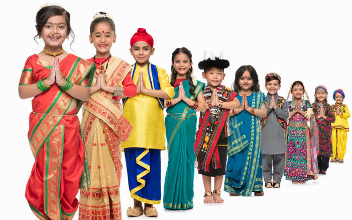
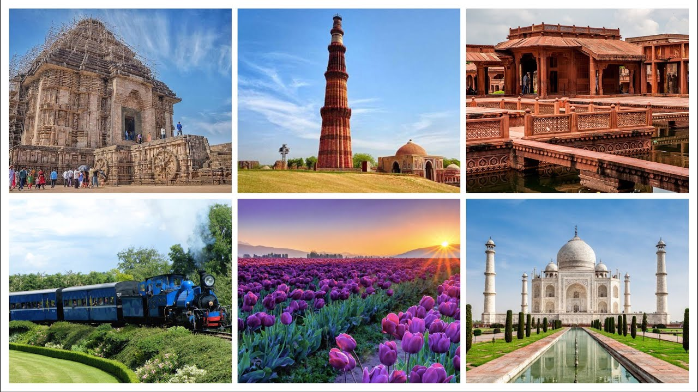

ANDHRA PRADESH
border: 1px solid black;
The culture of Andhra Pradesh is an integral part of the rich cultural heritage of the country. The art and crafts of the region like Kalamkari, Bidri, the fabulous weaving of Gadwal and Venkatagiri, the exclusive metal ware, brass, stone and wood carving highlight the immense talent of the Andhra craftsmen.

KERALA
Hinduism and Islam are the two major religions of Kerala. More than 50% of people in Kerala follow Hinduism, and more than 25% follow Islam. Around 20% are Christians, and others follow Buddhism, Jainism, Judaism and other religions. The cultural diversity of Kerala is well known.

TELANGANA
The Culture of Telangana in India has a cultural history of about 5,000 years. The region emerged as the foremost centre of culture in Indian subcontinent during the rule of Kakatiya, the Qutb Shahi and Asaf Jahi dynasties— (also known as the Nizams of Hyderabad). The rulers patronage and interest for culinery, arts and culture transformed Telangana into a multi-cultural region where two different cultures coexist together

MAHARASTRA
Maharashtra is the third largest state of India. It has a long history of Marathi saints of Varakari religious movement, such as Dnyaneshwar, Namdev, Chokhamela, Eknath and Tukaram which forms the one of bases of the culture of Maharashtra or Marathi culture.Maharashtra had huge influence over India under the 17th-century king Chatrapati Shivaji Maharaj of the Maratha Empire and his concept of Hindavi Swarajya which translates to self-rule of people.

RAJASTHAN
Rajasthan is famous for textiles, semi-precious stones and handicrafts, and for its traditional and colorful art. Rajasthani furniture has intricate carvings and bright colours. Block prints, tie and dye prints, Bagaru prints, Sanganer prints and Zari embroidery are major export products from Rajasthan.

GOA
A civilization of warm, happy people, Goa sees a mix of different religions like Christians, Catholics, Muslims, and Hindus that live together in harmony. Following their age-old traditions and customs, Goan's celebrate all major festivals with fervour without bringing any religious barriers within the society.

Indian Culture
Indian culture is the heritage of social norms, ethical values, traditional customs, belief systems, political systems, artifacts and technologies that originated in or are associated with the ethno-linguistically diverse Indian subcontinent. The term also applies beyond India to countries and cultures whose histories are strongly connected to India by immigration, colonization, or influence, particularly in South Asia and Southeast Asia. India's languages, religions, dance, music, architecture, food and customs differ from place to place within the country.
Indian culture, often labelled as a combination of several cultures, has been influenced by a history that is several millennia old, beginning with the Indus Valley Civilization and other early cultural areas. Many elements of Indian culture, such as Indian religions, mathematics, philosophy, cuisine, languages, dance, music and movies have had a profound impact across the Indosphere, Greater India and the world.

Heritage
The rich heritage of India, one of the world’s oldest civilizations, is an all-embracing confluence of religions, traditions and customs. The highlights of Indian heritage lie in the treasure of its art, architecture, classical dance, music, flora and fauna, and the innate secular philosophy of its people. A visit to the heritage sites is like a walk through history, changing lanes with every dynasty that ruled Indian soils. The finesse of Indian handiwork, the richness of silk and cotton textiles, the ethnicity of jewellery, everything has come down as a heritage from ancient times and is being kept alive generation after generation. Even food in India is a legacy and part of Indian heritage, differing in look and taste in every state of India.